Drawing tools in MapHub
This tutorial will introduce you to the different drawing tools in MapHub.
It starts where "Creating your first map" tutorial finished. If you haven't done it yet, we recommend you to do it first.
Click My Maps and load the map you've saved previously, by clicking on it.
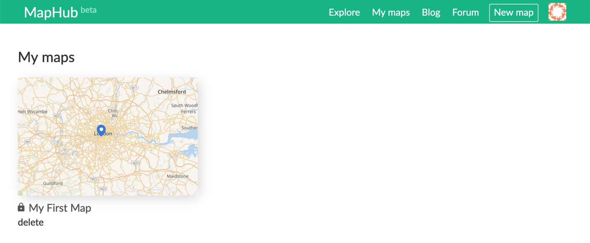
Once the map loads, you can see the drawing tools on the left side of the map.
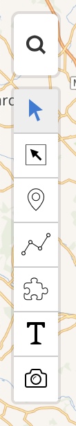
Point tool
The point tool allows you to create new points (or markers).
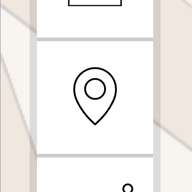
Select the point tool and click somewhere on the map. Once added, these points are shown with a blue icon by default.
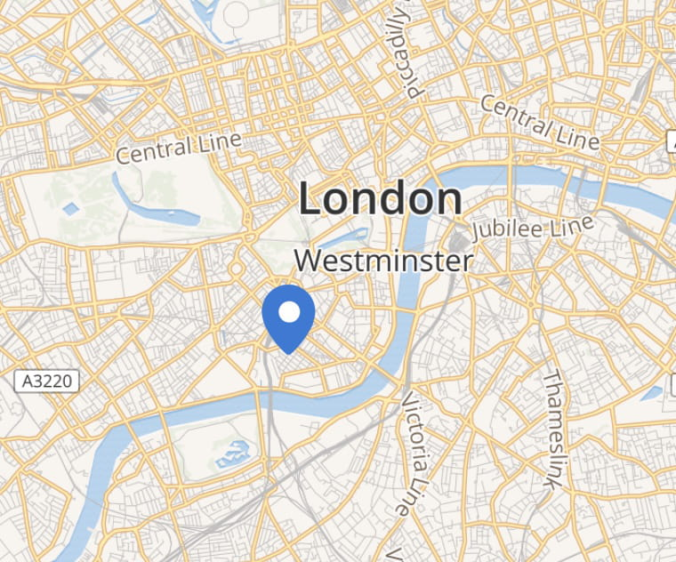
You'll also see a popup appearing.
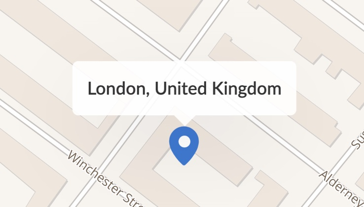
Have a look at the right side Item menu. Using the Title and Description fields, you can customize the display of the popup. Scroll down, and you can customize the Color and Icon as well.
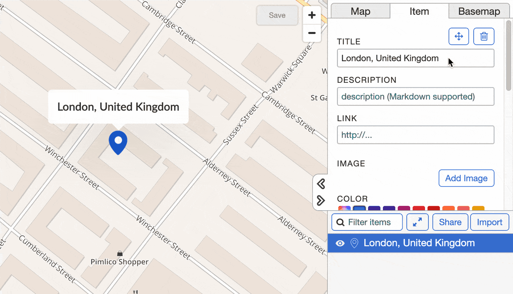
You can also upload a custom PNG file for the icon. Make sure to use one with a transparent background.
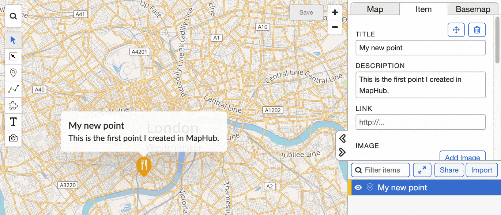
If you would like to move a point, click the move icon.
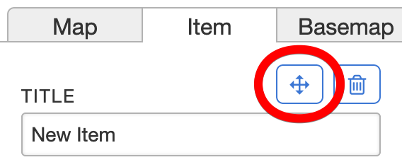
If you would like to delete a point, click the delete icon or press the
Del/Backspacekey.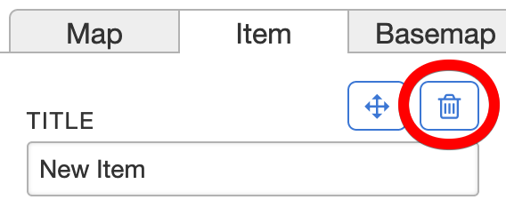
Line tool
The line tool allows you to create simple or complex lines.
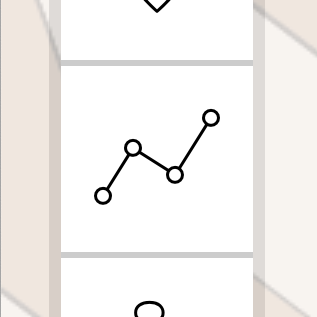
Select the line tool and click somewhere on the map to start drawing a new line. The map goes in a "line drawing" mode.
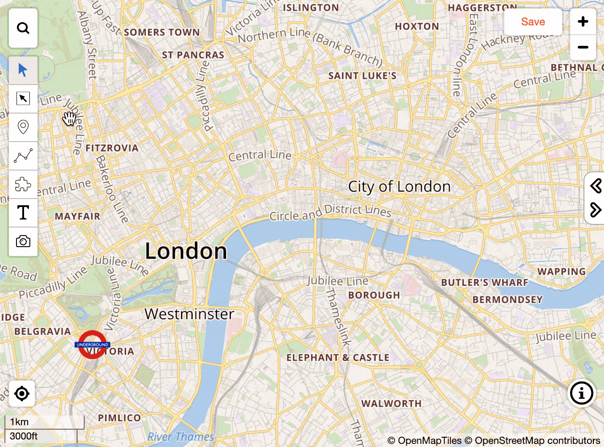
You can finish drawing by clicking on the last point, or by pressing the
EnterorEsckey.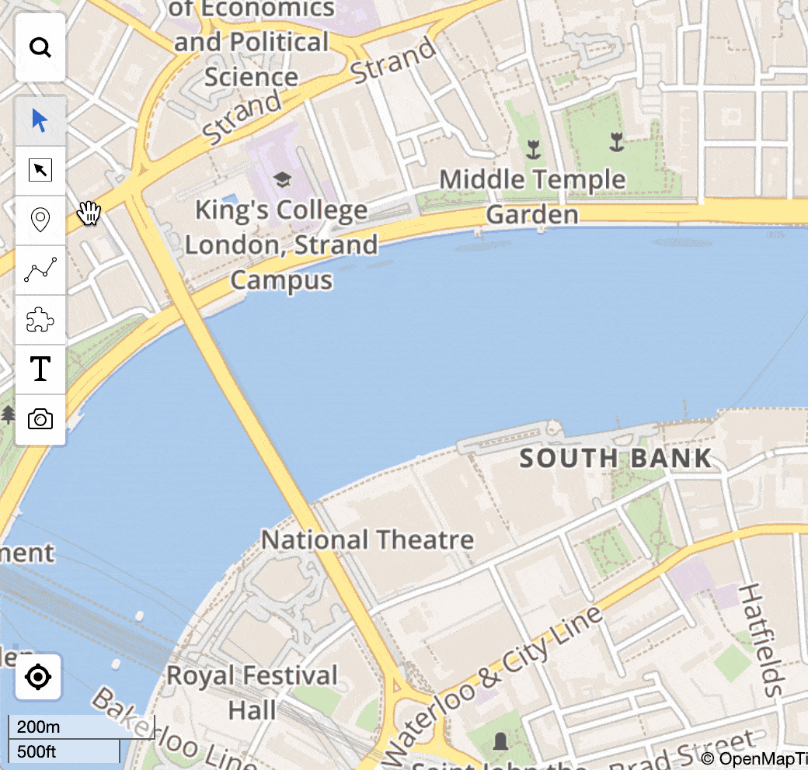
In the right-side panel, you can change the color of the line and see the Length, calculated across all segments.
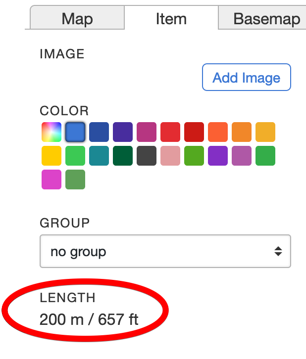
Editing existing lines
By clicking on an existing line, you can go to Edit mode by clicking on the following button:
Editing existing points of a line can be done by dragging the white circles.
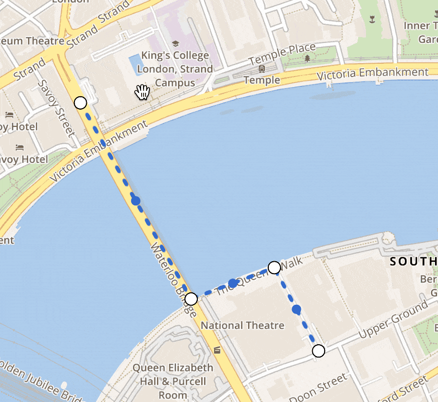
Adding new points between existing points can be done by clicking on the smaller blue circles and dragging them.
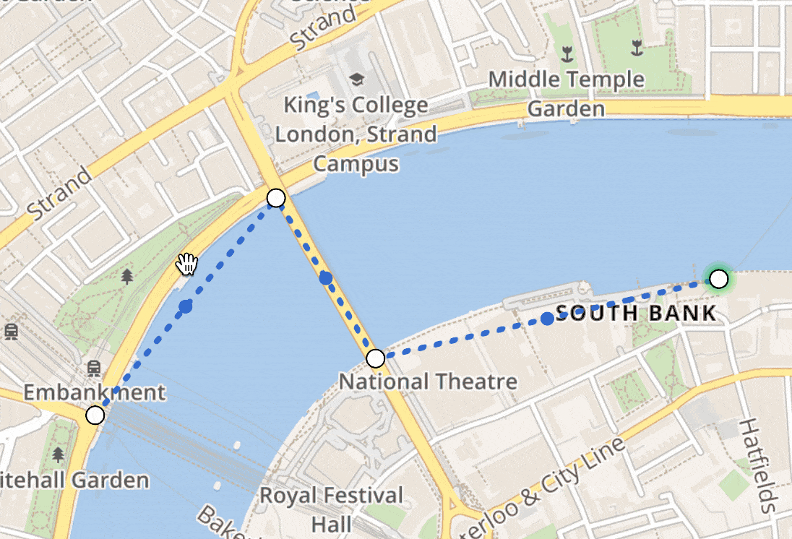
You can add points at the ends of the line, by Ctrl / Cmd clicking on the endpoints. In this mode, you can finish editing by clicking on the last point twice, or by pressing the
EnterorEsckey.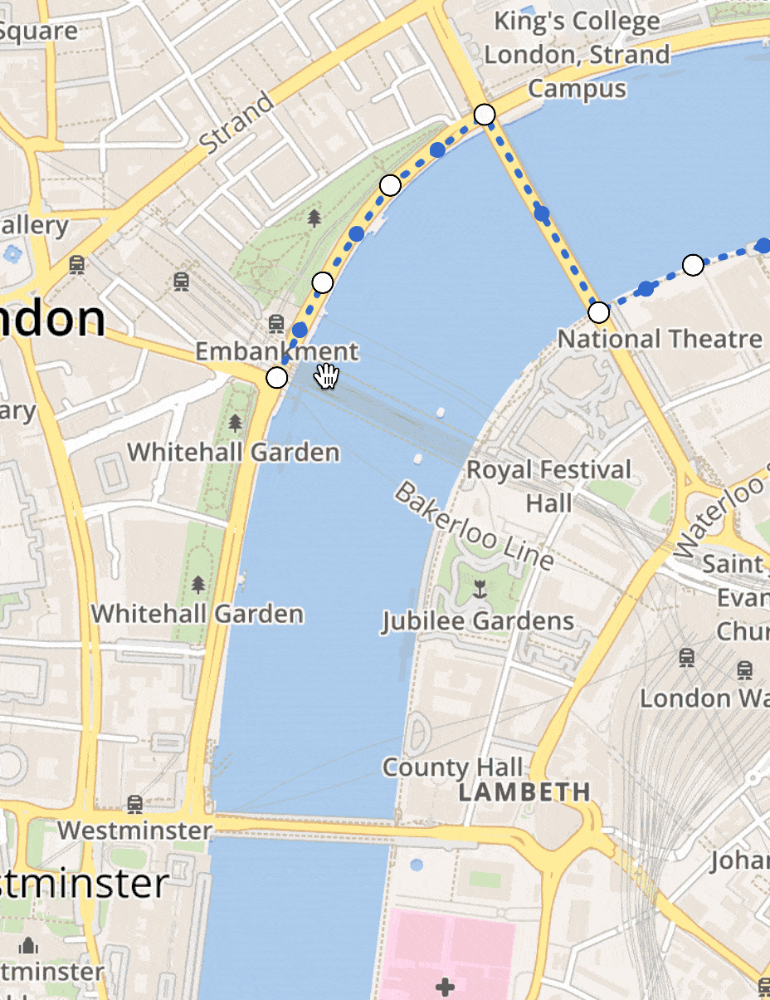
To delete points within a line, you need to click on a white circle (it displays as a green outline), and then press the
Del/Backspacekey, or the Delete icon in the right-side panel.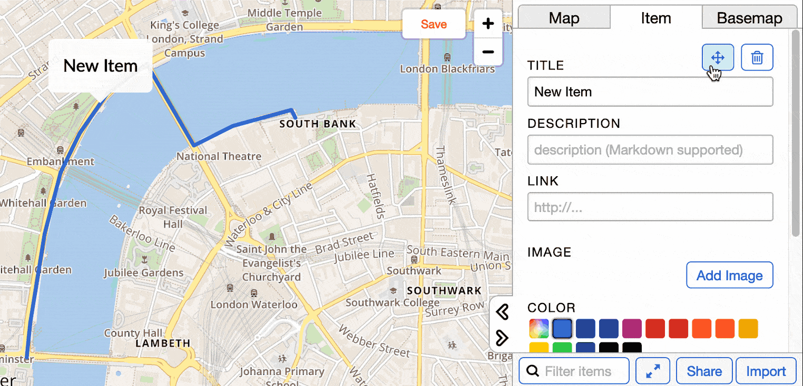
You can exit the line editing mode by clicking on the Edit mode button, or pressing the Enter or Esc key.
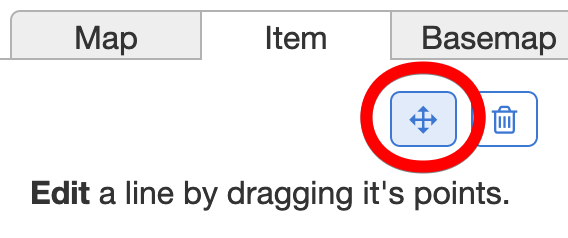